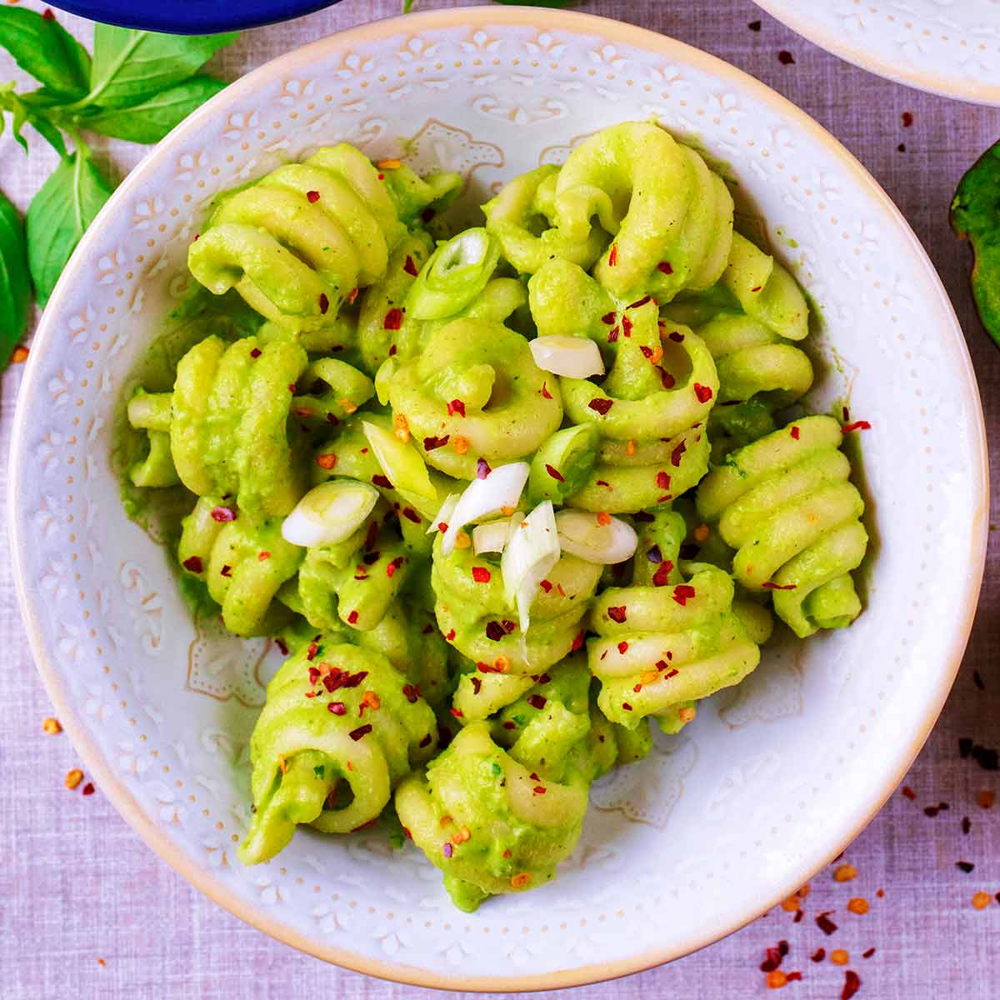

This creamy avocado pasta is a quick, fresh, and satisfying dish that comes together in under 20 minutes. Instead of using heavy cream, ripe avocado creates a naturally smooth and velvety sauce that coats the pasta perfectly. The garlic and lemon juice add a bright, slightly tangy flavor that balances the richness of the avocado, making every bite light but still comforting.